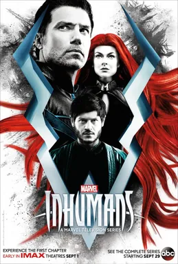

The genetics
In the series, being Inhuman is a matter of inheritance: Inhumans carry a gene that, on exposure to Terrigen crystals in a rite called Terrigenesis, unlocks their genetic potential and gives each a unique power, from Black Bolt's destructive voice to Medusa's living hair. The society of Attilan is organised around this, with a Genetic Council, and those who fail to gain powers lose status; Maximus, who lost the Inhuman gene in his own Terrigenesis, says that he would have been sent to work in the mines had he not been the king's brother, a resentment that drives his coup. On Earth, a geneticist, Evan Declan, has been testing Inhumans, but the available sources do not describe his aims or what his work leads to. The showrunner wanted the powers to seem a natural part of each character's personality rather than a scientific product. A gene that confers powers only after contact with a crystal is fantasy.
How genetics is portrayed
- Overall portrayal of genetics
- neutral The Inhuman gene is treated as a natural part of the characters rather than as science, and the one geneticist is not characterised.
- Outcome of the genetic intervention
- mixed Terrigenesis unlocks the Inhuman gene and gives powers, but those who fail it are demoted, and Maximus's resentment at losing the gene drives the coup that ends with Attilan destroyed.
- Dr. Evan Declan
- neutral Aim: not stated (not applicable). A geneticist who has been testing Inhumans on Earth; the sources give no aims, framing or results for his work.
The story
This Marvel series follows the royal family of the Inhumans, a people with superhuman abilities who live in secret in the city of Attilan on the Moon. Maximus, the brother of King Black Bolt, lost his chance at powers in the Inhuman transformation ritual and is looked down upon; he believes the Inhumans should return to Earth and leads a military coup. Black Bolt, whose voice is so destructive that he speaks only in sign language, escapes to Hawaii with Queen Medusa, the strategist Karnak, the guard leader Gorgon and the young Crystal, carried by Crystal's teleporting dog Lockjaw. Scattered on Earth, they struggle to adapt to human society and to regroup, while Maximus sends Inhumans after them. They also meet Louise, a human scientist obsessed with the Moon, and Evan Declan, a geneticist who has been testing Inhumans on Earth. The single season ends with the destruction of Attilan and the Inhumans settling on Earth as refugees.